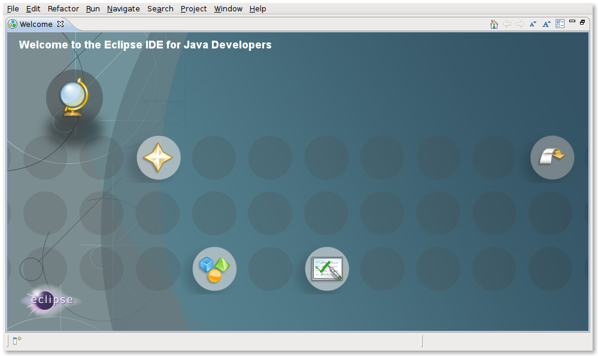
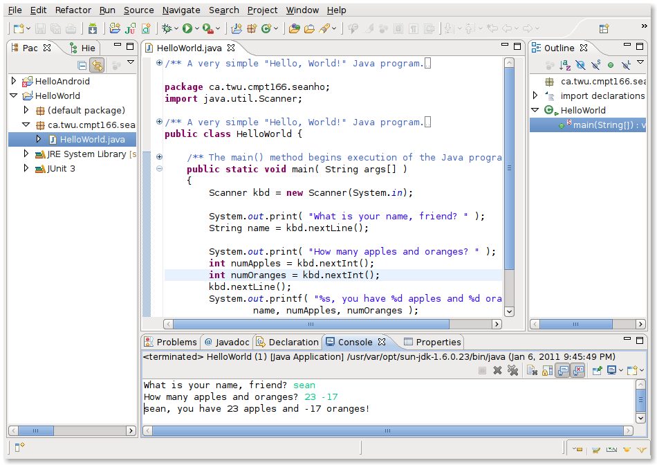
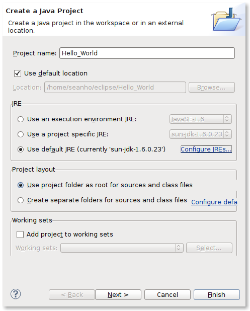
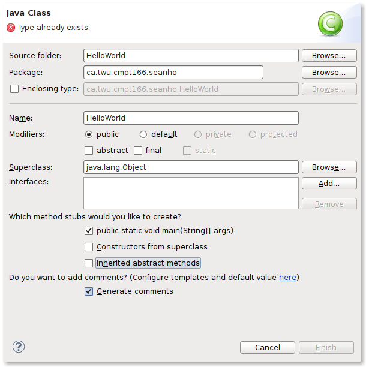
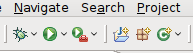

Starting Eclipse
Eclipse is installed on the senior lab computers,
under the Programs menu, Programming. If you want to install Java and Eclipse
on your own computer, you may; see the section at the bottom of this document.
Workspace
- The Workspace is where all the Java programs you write in Eclipse will
be stored. You want to put this on a network drive so that you have access
to it from different computers. You would probably want to create a
subdirectory on a network drive, e.g., "X:\eclipse" or "X:\cmpt166".
- In the senior lab, the X: "csilab" drive is accessible from any
computer in the lab, and there are no disk quotas. You won't be able to
access X: from other computers on campus, but Eclipse is also only installed
in the senior lab.
- You could also put the Workspace on Z: "My Documents", but there is
a 250MB quota there.
- Once you've chosen where you want the Workspace to be, check
"Use this as the default and do not ask again" in order to use this folder
in the future.
The Workbench
- Now you should see the Welcome screen, with just a few big round
icons. You can browse the tutorials if you like, or just select the
right-most icon to "Go to Workbench".

- The Workbench is the main window where you do your coding and testing.
It is composed of a number of sub-windows, called Views:
- The left-most pane ("Package") shows an outline of your whole
project, including all packages and files.
Double-click a file to open it for editing.
- The main middle pane is for the current Java source code file you're
editing.
- The lower pane ("Console") is for output when you test your program.
There are a few other views that can be shown in that lower pane,
accessible by tabs.
- The right-hand pane ("Outline") shows the organization of the
current file being edited -- imports, classes, methods, etc.

- These panes can be reconfigured; a set of Views is called a Perspective.
You can change Perspectives in the toolbar at top right: one Perspective
might be better for coding, and another for debugging, etc. You can also
define your own Perspectives with the Views that work best for you.
I usually just stick with the default Java perspective for coding.
New Java Project
- Let's create a new project: from the File menu, select New -->
Java Project.
- You can also select the top-left white toolbar button --
choose the little arrow next to the button to pull-down a menu -- and
select "Java Project".
- If you click the toolbar button instead of the pull-down, the
"New Project" dialogue pops up; just navigate the kinds of projects
and select "Java Project". The idea is you can also use Eclipse to
develop C++ projects, PHP projects, etc.
- Each project can contain multiple packages. Each package may
contain multiple classes. Each class may contain multiple methods.
For CMPT166, a project might be a single lab assignment.

- In the "New Java Project" wizard, choose a "Project Name": for our
example, type "HelloWorld".
- The Java convention is that project names can be only letters or numbers,
and are capitalized in "CamelCase".
- Under "Project Layout", check the option,
"Use project folder as root for sources and class files". This puts both
your source code (*.java) and the compiled Java bytecode (*.class) in the
same directory. When you turn in your labs, you can just upload everything
in that directory.
- You can even set this as the default for future projects: select
"Configure default", and in the resulting configuration window for
"Build Path", select "Source and output folder: Project" and press "OK".
- Press "Finish" to close the "New Java Project" wizard, or
press "Next" to see more options and then "Finish".
New Class
- Now we have a new empty project; let's create a class. Remember that
Java is fully object-oriented, so every bit of code has to go into some
method in a class.
- From File --> New, or from the toolbar button pull-down, select
"New Class".

- In the "New Class" wizard, name your class "HelloWorld". The same
rules apply to class names; the filename will also match the class name.
- Verify that the "Source folder" is in the correct project
("HelloWorld").
- The "Package" may be left blank for now, but there will be a warning
about "The use of the default package is discouraged". You can ignore this
warning for now. Packages are libraries, used for organizing groups of
classes; classes may share information within a package. If you deliver your
project for others to use, you should specify your own package to help
organize the classes: e.g., ca.twu.seanho.lab2 or somesuch. More info
on packages in the lectures.
- Under "Which method stubs would you like to create?", ask for
"public static void main(String[] args)". This is the class method that
gets run first when you run the program; it kicks everything else off.
You don't have to ask Eclipse to generate method stubs; you can type them
in manually if you like.
- You may also ask Eclipse to "Generate comments" for you to fill in.
- Press "Finish" and behold your new file of Java code!
Coding and Testing
- In the body of the main() method, just after the "TODO" comment,
type in the following Java code exactly as given here, including
the semicolon at the end:
System.out.println("Hello, World!");
- This uses the "out" object (the stdout file handle) from the
"System" library, which is already imported by default. The "println()"
method is called on that file handle, with the string parameter
"Hello, World!". The result is to print the given string to the console,
with a newline afterward.
- You may now delete the line with the "TODO" comment if you like.
Eclipse can search for comments that start with "TODO" (in all-caps) and
flag them as tasks for you (see the top-right pane of the default View).
The idea is that when you write a stub function, put a "TODO" comment there,
then you know to come back to it later and fill in the body of the function.
- Let's run our program! Press the green triangle toolbar button
(looks like a VCR "play" button), or use the "Run" menu.

- The console output should appear in the bottom pane: "Hello, World!".
Congratulations, you have just written your first Java program!
(With a bit of help from Eclipse!)
Further Resources
- Eclipse is not just a Java development environment; it has plug-ins
for doing C++ development, Perl, PHP, and even
Python! It can be used to develop
stand-alone programs, or web-based applets, or even plug-ins to extend
Eclipse itself. There is also a large and active community around Eclipse,
and it is completely free for your own use. Have fun exploring its many
features, both within the program as well as on the web at
eclipse.org.
- Eclipse has some excellent tutorials built-in to its help system;
see the "Help" menu. You can also always get back to the Welcome screen
from Help --> Welcome.
- Some beginner's video tutorials; they go pretty slowly, but explain
a lot, and you can always fast-forward:
EclipseTutorial
Installing Java on your own computer
You may also install the JDK (Java Development Kit) on your own computer.
Do so at your own risk; no official support will be given for development
environments other than the lab PCs.
- If you have Mac OS X 10.6 prior to Update 3, then the JDK should be pre-installed
already, so you can skip these steps.
- Go to
Oracle's Java developer site.
- Note that the consumer-oriented java.com site only has the
JRE (Java Runtime Environment), which doesn't let you write Java programs.
- Select the
Java SE (standard edition).
- You don't need the EE (enterprise edition), which is for web servers, and
- You don't need the ME (micro edition), which is for mobile phones.
- Select the download icon for "Java" to download the JDK.
- You don't need JavaFX, which is for Internet apps on diverse screens.
- You may download the bundle with the NetBeans IDE if you like;
NetBeans is an alternative to Eclipse.
- Select your platform (operating system), agree to the license, and proceed
to the download page.
Installing Eclipse on your own computer
The JDK is all you need to compile Java programs, but you may want to
install an IDE (Integrated Development Environment) like Eclipse to help
you manage your code.
Eclipse is a big download and a big program, but very powerful -- and
free for your own use!
- Make sure you have installed the JDK as above.
- Go to eclipse.org.
- Select "Eclipse IDE for Java Developers"; this is what is installed in
the computer lab.
The latest version should be 3.6.1, codenamed "Helios".
- You may also try the larger "Eclipse Classic 3.6.1" package,
which includes the Java IDE plus various add-ons.
- Open the resulting (large) ZIP file and extract the contents to someplace
on your hard drive, e.g., C:\ or C:\Program Files\.
Unpacking the ZIP file will create a folder called Eclipse there.
This is not where your code will live, but where the Eclipse program
will be stored. If you ever need to uninstall Eclipse, simply delete the
Eclipse folder.
- Run the eclipse.exe program in the Eclipse folder.
- There is more documentation on installing Eclipse available on
the Eclipse wiki.
There are other options for IDEs for Java:
NetBeans,
JCreator,
DrJava, etc.
The CD in the back of the Savitch textbook has copies of these (although
the version of Eclipse on the web is newer than the one on the CD).
If you don't have an IDE you can always use a
plain-text editor like Notepad,
vim, etc.
The compiler is named javac, and the runtime environment to execute
a Java class is named java.